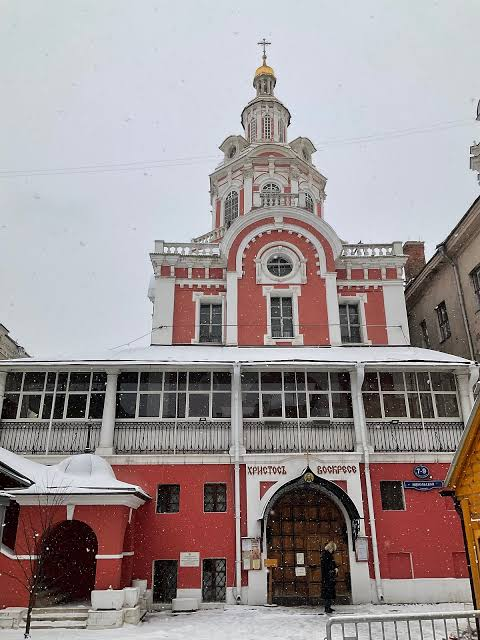

Начало истории высшего образования в Старом Свете (то есть в Европе) берет свое начало еще в
1088 году. Интересно то, что первые здания учебного заведения все же известны лишь с XIV века. Но, так или
иначе,
именно Болонский университет является первым в Европе, и после чего начали появляться другие, в том числе:
Оксфордский университет (основан в 1117 году).
Парижский университет (основан в 1208 году).
Неапольский университет (основан в 1224 году).
Венский университет (основан в 1365 году) и прочие.
Высшее образование в последующих веках развивалось все такими же бурными темпами, а также перемещалось из Европы и
на
другие материки, например в Америку.
Когда началась история высшего образования в России

В отличие от Европы, история высшего образования на территории Московского царства, а потом Российской
империи началась аж в XVII веке. В 1687 году была основана Славяно-греко-латинская академия, которая
и открыла ворота к высшему образованию в России.
Она была открыта благодаря стараниям Симеона Полоцкого и в ней могли учиться представители не только
привилегированного сословия (знать, бояре, дворяне), но и других сословий государства Российского.
Однако эту академию нельзя считать полноценным Высшим учебным заведением. Первые ВУЗы в России появились
лишь в начале XVIII века, в том числе во времена знаменитых Петровских реформ.
В XIX веке высшее образование в Российской империи продолжало развиваться, открывались новые ВУЗы (Казанский
и
Харьковский в 1804, а также многие другие), развивались науки и появлялись новые ученые.